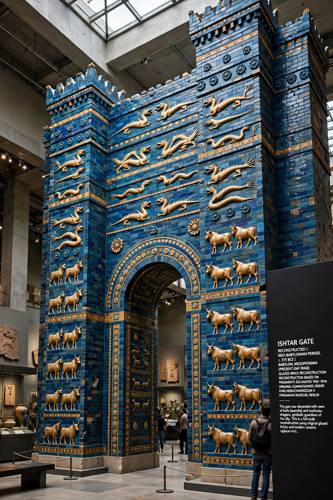

[Image placeholder: The Ishtar Gate of Babylon, reconstructed in Berlin]**Babylon** was an ancient city in Mesopotamia, on the Euphrates River in what is now Iraq, about 85 km south of Baghdad. Capital of the Babylonian empire under Hammurabi (18th century BC) and again under Nebuchadnezzar II (6th century BC), it was among the largest cities of the ancient world and a byword for wealth, power and — in later religious tradition — decadence.
Babylon is remembered for Hammurabi's law code, the Hanging Gardens (one of the Seven Wonders of the Ancient World, whose existence in Babylon is debated), the Ishtar Gate with its blue glazed bricks, and the great ziggurat Etemenanki, a probable inspiration for the Tower of Babel. Conquered by Cyrus the Great in 539 BC, it declined under Persian, Greek and Parthian rule and was largely abandoned by the early centuries AD.
Babylon rose under its First Dynasty; Hammurabi (r. c. 1792–1750 BC) united Mesopotamia and issued his famous stele of laws. After Assyrian domination, the Neo-Babylonian Empire of Nabopolassar and Nebuchadnezzar II destroyed Jerusalem (587 BC) and exiled Judah's elite — the Babylonian captivity of the Bible. Alexander the Great planned to make Babylon his capital and died there in 323 BC.
German excavations from 1899 recovered the Ishtar Gate (reconstructed in Berlin's Pergamon Museum). Saddam Hussein rebuilt parts of the ruins in the 1980s with bricks stamped with his name; the site suffered damage after the 2003 Iraq invasion and became a UNESCO World Heritage Site in 2019.